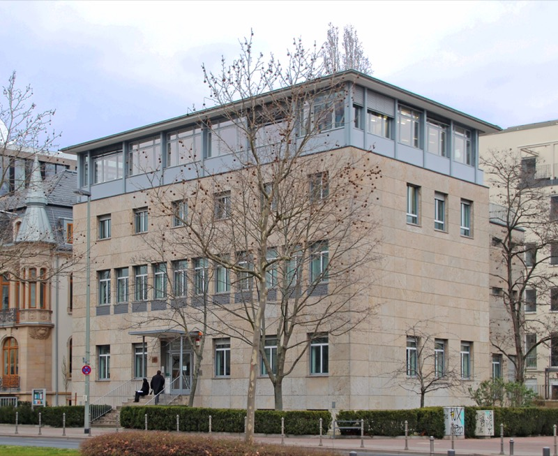

7e editie
21 juni 2026 · 7 artikelen

‘Omarm ongelijkheid’
Frederik Jansen over de Frankfurter Schule

Forumland: Ritchie's kunstcollectie
Kunstverzamelaar Adriaan van Waalwijk van Doorn

In gesprek met Uģis Nastevičs
“Mensen zongen in een Sovjet-isolatiecel de Dainas.”

In gesprek met Vytautas Sinica
“In Litouwen ben ik de enige rechtse parlementariër.”

Frankenstein
Een megalomaan project op het witte doek

Een brutalistische bruiloft in Vilnius
Grijze betonblokken tekenen Oost-Europa

De Trukendoos van een Klassieke Componist
Hoe spanning en ontspanning muziek maken